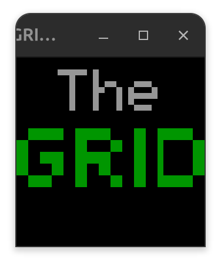

GRID-Arcade
This is the GRID (Gaming Retro Interactive Device), my fun hobby project to create a custom arcade box.
It features an Adafruit Metro M0 Express microcontroller driving a 32x32 RGB LED matrix display, with a PS2 joystick for input. The arcade box runs multiple games including my original creations:
- Snake: the classic Snake game
- Life: Conway's Game of Life
- Maze: a version of my original maze-generating escape game, A-Maze-ing Race
- Boids: a version of my simulation of birds, Boids
- Calib: a scene to adjust input calibration for the PS2 Joystick
- QR: a QR code linking to my personal website (in progress)

Why I did it
I needed to consolidate my two programs I had built for the Adafruit Metro M0 and RGB matrix (A-Maze-ing Race and Boids), because the old enclosure was falling apart.
This new project would allow players to select between the two programs, keep the electronics more stable, and be an exercise in skill development.
It would also open the possibility to program more games and have more fun with the hardware. The two games I had previously felt a little incomplete. So it was an opportunity to polish my creations in a neat package and make it feel finished.

What I did
I started with the build by collaborating with my friend Herman to collect materials, design the enclosure, and assemble the structure. The whole process took place over a couple of weeks.
Once the enclosure was finished, we redid the wiring for the Adafruit Metro M0 to the RGB matrix so that it was more secure. Next I began with re-programming Boids and using Notion AI to help me implement scene-switching logic for other games. I created a menu and cleaned up the code for future re-use. With the help of AI, I made an emulation of the display using SDL2 that I could use to debug logic before testing with hardware.
Next I implemented a Calibration scene which allowed me to adjust the input signals and save them. From there I used the MCU's Flash memory and Adafruit's SPI flash library to save/load calibration settings.
After, I focused on porting A-Maze-ing Race over the new framework. I reduced any globals and used best-practice patterns to implement the maze game. To ensure the game fit, I used memory efficient data-types such as bitsets for game parameters. I enabled high-scores to be saved/loaded from Flash memory. Finally I added two new games: Conway's Game of Life, and the classic Snake game.
Challenges
The main challenge I encountered was learning when and how to use AI tools for coding C++. I learned that the tools were not accurate for certain kinds of issues and this trained me to be more skeptical in its results. The best use for it was learning new patterns and ways to implement code that other developers found effective. It was also helpful in implementing tedious code, e.g. the bit pattern for the GRID logo.
Another challenge was implementing timing parity between the emulation and hardware. For instance, the Boids program ran slower (~16 FPS) on the hardware, so I had to develop timing classes for the emulation to run identically as hardware.
Acknowledgements
I'd like to thank my friend Herman Tabunganua for his help assembling the GRID enclosure.
References
You can view the source code of the project here.